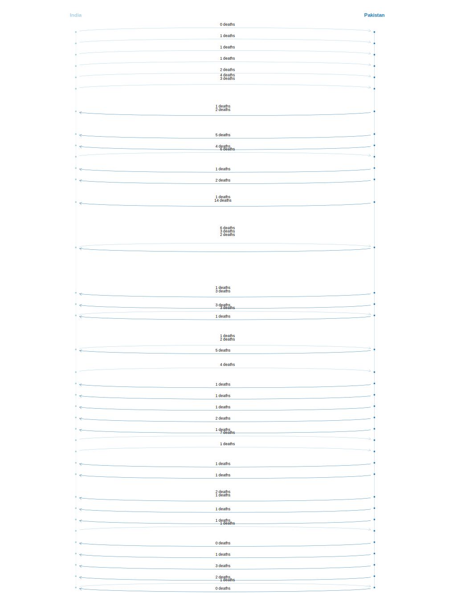

ICBe Crises 416-431
- 416 Red Sea Islands (1995-1995)
- 417 Aegean Sea Iv (1996-1996)
- 418 Oprn Grapes Of Wrath (1996-1996)
- 419 Desert Strike (1996-1996)
- 420 N. Korean Submarine (1996-1996)
- 421 Zaire Civilwar (1996-1997)
- 422 Unscom I (1997-1998)
- 423 Cyprus/Turkey Missile (1998-1998)
- 424 Ethiopia-Eritrea I (1998-2000)
- 425 India/Pakistan Nuclear Tests (1998-1998)
- 426 Drc Civil War (1998-2002)
- 427 Us Embassy Bombings (1998-1998)
- 428 Syria/Turkey (1998-1998)
- 429 Unscom Ii (1998-1998)
- 430 Kosovo (1999-1999)
- 431 Kargil (1999-1999)
Back to Main Page.
View Crises 1-15; 16-31; 32-47; 48-63; 64-79; 80-95; 96-111; 112-127; 128-143; 144-159; 160-175; 176-191; 192-207; 208-223; 224-239; 240-255; 256-271; 272-287; 288-303; 304-319; 320-335; 336-351; 352-367; 368-383; 384-399; 400-415; 416-431; 432-446; 447-461; 462-476;
416 Red Sea Islands (1995-1995)
ICBe Narrative
id | sentence | codings_sentence |
416.1 | Yemen and Eritrea experienced a crisis over three Red Sea islands from 15 to 31 December 1995. | No events. |
416.2 | Background and Pre-CrisisA dispute between Yemen and Eritrea broke out in November 1995 over three Red Sea islands, in which a small Yemeni fishing community lived. | No events. |
416.3 | Greater Hanish, the main island in a chain between the two states, is nearby one of the world's major shipping lanes, 100 miles north of the southern entrance to the Red Sea. | No events. |
416.4 | Eritrea had laid claim to the islands on what it described as historical grounds, as it acknowledged that its forces had been based on the Red Sea islands since its 30-year war against Ethiopia, after which Eritrea won independence in 1993. | No events. |
416.5 | The two states were concerned with establishing rights over fishing, tourism and mineral exploitation. | No events. |
416.6 | Eritrea claimed that Yemen first put troops on the Hanish islands in early November. | Eritrea initiated accuse toward |
416.7 | Yemen contended that tension was raised after Eritrea ordered all Yemenis off the islands on 11 November. | Eritrea initiated end unspecified cooperation;restrict rights |
416.8 | Eritrean naval patrols tried to land on the islands and Yemen increased its military presence there. | Yemen initiated fortify Eritrea initiated deployment to area |
416.9 | A senior delegation, including Eritrea's Foreign Minister Petros Solomon, and Resources Minister Saleh Meki, visited Yemen on 22 November in an attempt to resolve the dispute peacefully. | Eritrea initiated meeting toward Yemen. |
416.10 | A Yemeni delegation headed by Foreign Minister and Deputy Prime-Minister Abdul ali al-Karim al-Iryani held talks with Eritrean officials in Asmara on 7 December. | Yemen initiated meeting toward Eritrea. |
416.11 | The two countries agreed to resolve the dispute through diplomacy in a further round in Yemen. | Eritrea initiated express intent toward |
416.12 | Eritrean forces attacked the Hanish islands on 15 December 1995 and captured the largest -- Hanish al kabir -- after three days of fighting, involving warships and aircraft from both sides. | Eritrea initiated attack toward Yemen. |
416.13 | That triggered a crisis for both states. | Yemen experienced a start of crisis about sentence 12. |
416.14 | The next day Yemen accused Eritrea of invading the islands in a "treacherous act of aggression." | Yemen initiated accuse toward |
416.15 | In a telephone conversation between President Ali Abdullah Salih of Yemen, and Eritrea's President Isseyas Aferworki on 17 December, the two leaders reached a truce in the fighting. | Yemen initiated settle dispute toward Eritrea. |
416.16 | However, the next day Yemen claimed that Greater Hanish had been completely occupied by Eritrean forces, which had broken the truce. | Yemen initiated accuse toward |
416.17 | Eritrea claimed that the island was captured before the truce. | Eritrea initiated reject toward |
416.18 | The cease-fire between Yemen and Eritrea took effect on 18 December, and they agreed to have it monitored by a committee of four, comprised of a Yemeni and an Eritrean representative, and officials from the US embassies in the two states. | Yemen initiated cease fire toward Eritrea. Eritrea initiated cease fire toward Yemen. |
416.19 | The UN Secretary-General, Boutros Boutros-Ghali, arrived in Sana'a on 29 December to mediate the dispute. | United Nations initiated mediation toward Yemen;Eritrea. |
416.20 | After meeting with representatives from both sides and facilitating discussions on the matter on the 31st, he announced that Yemen was ready to withdraw its forces from the islands and to accept international arbitration. | Yemen initiated express intent;promise toward |
416.21 | This terminated the international crisis. | Yemen;Eritrea experienced a end of crisis about sentence 20. |
416.22 | (An agreement between Yemen and Eritrea was signed in Paris on 21 May 1996 to settle their dispute over the Hanish islands by arbitration. | Yemen initiated settle dispute;sign formal agreement toward Eritrea. Eritrea initiated sign formal agreement toward Yemen. |
416.23 | The two sides agreed not to use of force and to accept the verdict of a special arbitration tribunal. ) | No events. |
Phoenix Crisis Map

Terrier Crisis Map

ICEWS Crisis Map

MIDs Incidents Crisis Map

417 Aegean Sea Iv (1996-1996)
ICBe Narrative
id | sentence | codings_sentence |
417.1 | Greece and Turkey experienced another crisis in the Aegean Sea from 26 to 31 January 1996. | No events. |
417.2 | Background and Pre-CrisisSeveral mini-crises over territory and resources in the Aegean Sea erupted between Greece and Turkey from 1976 onward. | No events. |
417.3 | The two neighboring states failed to find a legal framework for regulating their disputes in shared waters, including the demarcation of the continental shelf and the extension of Greek territorial waters. | No events. |
417.4 | The uninhabited 10-acre island of Imia is located in the Dodecanese chain in the eastern Aegean, between the Greek island of Kalimos and the Turkish coast. | No events. |
417.5 | Imia was used as a fishing station and a navigation guide. | No events. |
417.6 | The most recent crisis between Greece and Turkey was over the sovereignty of Imia, recognized as Greek territory under the Paris 1947 convention, in which the Dodecanese islands were ceded to Greece by Italy after World War II in reward for Greece fighting against the Nazis. | No events. |
417.7 | Italy had taken these islands from Turkey in 1932, but Turkey claimed the protocol that transferred sovereignty of the Dodecanes islands from Turkey to Italy was invalid because it had not been submitted to the League of Nations for registration. | No events. |
417.8 | Tension between Greece and Turkey was renewed on 26 December 1995, as a Turkish cargo boat, "Figen Akat," ran aground on Imia in Greek territorial waters close to the Turkish coast. | No events. |
417.9 | The ship's crew refused help from Greek officials, claiming that they were on Turkish soil, called "The Kardak Rocks." | No events. |
417.10 | However, on 28 December the ship left with the help of the Greek authorities, and Turkey issued a letter of protest, contesting Greek jurisdiction over the island. | No events. |
417.11 | The next day, Turkey's Ministry of Foreign Affairs also addressed a verbal note to the Embassy of Greece, asserting that the island constituted part of Turkish territory. | No events. |
417.12 | On 10 January, Greece responded by claiming that its "national sovereignty" was "indisputable." | No events. |
417.13 | On 26 January 1996, a month after the Turkish ship ran aground on the Greek island of Imia, the Turkish newspaper, Huriet, raised again the issue of the sovereignty of the Kardak Rocks. | Turkey initiated praise toward |
417.14 | The same day, the mayor of the nearest Greek island raised the Greek flag on Imia. | Greece initiated assert political control over toward Turkey. |
417.15 | That triggered a crisis for Turkey, which sent naval forces to the area, triggering a crisis for Greece. | Greece experienced a start of crisis. Turkey initiated deployment to area;deployment to area;mobilization Greece;Turkey experienced a start of crisis about sentence 14. |
417.16 | On the 28th a group of Turkish journalists flew by helicopter to Imia, took down and tore the Greek flag and raised the Turkish flag, which was then proudly displayed over Turkish media. | Turkey initiated assert political control over;assert political control over;end unspecified cooperation toward Greece. |
417.17 | Greece responded the same day by deploying Greek marines to the island to restore the Greek flag, and nine remained on the island to guard it. | Greece initiated deployment to area |
417.18 | Greece also took up the issue with the Turkish government and with the ambassadors of the Western European states, the US and Russia. | Greece initiated appeal toward |
417.19 | Turkish Prime Minister Tansu Ciller declared that her country could not tolerate a Greek flag on a Turkish island, and soon several warships from both sides were arming their missiles around Imia as tensions escalated over the next few days. | Turkey initiated disapprove toward |
417.20 | On 29 January, Greece rejected a Turkish proposal for a bilateral dialogue to resolve the long-standing dispute between them. | Greece initiated reject toward |
417.21 | The same day, the Greek Ministry of Defense stated that Turkish and Greek fighter jets chased each other in the sky over the islet. | Greece initiated accuse toward |
417.22 | On 30-31 January the US envoy, Richard Holbrooke, mediated indirect negotiations between Greece and Turkey, and the US urged the two sides to return to the status quo before the crisis. | United States of America initiated mediation toward Greece;Turkey. |
417.23 | Holbrookes mediation helped to decrease the tensions in the crisis, though it is unclear if it directly led to the termination of the crisis. | No events. |
417.24 | On 30 January Turkish Prime Minister Tansu Ciller declared that the Greek flag would come down, and that no foreign flag would fly on Turkish soil. | Turkey initiated express intent toward |
417.25 | The same day, Turkish marines occupied the nearby Greek uninhabited islet of Akroyialia, and a Greek helicopter that was sent to examine the situation fell into the sea, in an accident apparently due to bad weather. | Turkey initiated invasion/occupation toward Greece. |
417.26 | However, the crisis ended the next day after the Greek flag was removed and troops from both states left the area. | Greece;Turkey experienced a end of crisis about act in this sentence. Greece initiated withdraw from area toward Turkey. Greece;Turkey experienced a end of crisis about act in this sentence. Greece initiated withdraw from area |
417.27 | Greek Prime Minister Constantine Simitis declared that the crisis over Imia was resolved without any negotiation with Turkey on Greece's sovereign rights. | Greece initiated disapprove toward |
417.28 | Turkish Prime Minister Ciller announced that it was a victory for Turkey because they forced Greek soldiers off Imia and removed its flag from the island. | Turkey experienced a victory about sentence 26. |
417.29 | The EU Council of Ministers did not adopt a common position in the crisis. | No events. |
417.30 | The European Parliament passed a resolution blaming Turkey for the crisis and supporting the previous status quo. | European Union initiated accuse toward |
417.31 | Neither Russia nor the UN was involved in the crisis over Imia. | No events. |
ICB Dyadic Crisis Map

Phoenix Crisis Map

Terrier Crisis Map

ICEWS Crisis Map

MIDs Crisis Map

MIDs Incidents Crisis Map

418 Oprn Grapes Of Wrath (1996-1996)

ICBe Narrative
id | sentence | codings_sentence |
418.1 | Israel and Lebanon experienced another violent crisis on both sides of their border from 9 to 27 April 1996. | No events. |
418.2 | Background and Pre-CrisisFrom the beginning of 1996 Hizbullah increased its attacks against Israel's forces in its South Lebanon "Security Zone. | No events. |
418.3 | " US pressure led to Syria's criticism of Hizbullah attacks against Israeli civilians in the settlements near the northern border. | No events. |
418.4 | Hizbullah then confined its operations to Israel's Defense Force, in order to gain political leverage. | No events. |
418.5 | On 8 April 1996 Hizbullah announced that a Lebanese child was killed and three other persons were wounded in a bomb explosion in South Lebanon, for which the IDF and the South Lebanese Army were blamed. | No events. |
418.6 | A crisis for Israel was triggered on 9 April by a major Hizbullah attack against Kiryat Shmona in Israel's northern Galilee, in which 36 Israeli civilians were wounded by 30 "Katyusha" rockets. | Israel experienced a start of crisis about act in this sentence. Hezbollah initiated attack toward Israel. |
418.7 | In the exchange of fire between the IDF and Hizbullah on the following day, four Israeli soldiers were killed. | Hezbollah initiated battle/clash toward Israel. Israel initiated battle/clash toward Hezbollah. |
418.8 | Israel's major response was an air attack against Hizbullah bases in South Lebanon and targets in Beirut on 11 April. | Israel initiated attack toward Hezbollah. |
418.9 | This retaliation, which catalyzed the flight of tens of thousands Lebanese from the south towards Beirut, triggered a crisis for Lebanon. | Lebanon experienced a start of crisis about sentence 8. |
418.10 | In spite of Israel's declarations that it had no intention to confront Syrian forces or the Lebanese Army, two separate incidents occurred, in which one Lebanese soldier was killed and two were wounded. | Israel initiated battle/clash toward Lebanon;Syria. |
418.11 | Israel demanded that Lebanon enforce its sovereignty and prevent Hizbullah attacks against Israel from Lebanon's territory. | Israel initiated demand toward |
418.12 | On 13 April one Syrian officer was killed following anti-aircraft firing by Syrian forces against Israeli planes. | Syria initiated battle/clash;bombard toward Israel. |
418.13 | Lebanon's major response was to call for an urgent UN Security Council meeting on 13 April, and a consultation in Damascus between Lebanese Prime Minister Rafik El-Hariri and President Asad of Syria. | Lebanon initiated appeal toward |
418.14 | While Hizbullah continued its attacks against Israeli settlements in the Galilee and Israel continued its retaliation on targets in Lebanon, El-Hariri also sought support in visits to Cairo and Paris. | Hezbollah initiated battle/clash toward Israel. |
418.15 | The European Community and French President Chirac expressed "deep concern" over the increased tension in Lebanon and the Galilee. | France;European Communities initiated disapprove toward |
418.16 | The Arab League condemned Israel's air attacks on Lebanon and called on the international community to force Israel to respect Lebanon's sovereignty. | Arab League initiated disapprove toward |
418.17 | On 14 April, after a meeting between Lebanon's Prime Minister and Foreign Minister with President Asad, Lebanon's Foreign Minister announced that his government was willing to return to the tacit understandings at the end of the "Operation Accountability" crisis in 1993 and for the first time, was also ready to guarantee that no Hizbullah attacks on Israel would be launched from Lebanon's territory. | Lebanon initiated express intent toward |
418.18 | The US attempted to mediate a cease-fire by proposing a tacit understanding, along with a formal agreement to terminate the crisis. | United States of America initiated mediation toward Hezbollah;Israel;Lebanon. |
418.19 | The latter was to include a cessation of Hizbullah "Katyusha" attacks from South Lebanon, along with Israel's pledge not to harm any Lebanese within Lebanon. | No events. |
418.20 | The tacit understanding was to include a mutual Hizbullah-Israel pledge of comprehensive calm in South Lebanon. | No events. |
418.21 | On 16 April the UN Security Council called on the parties to the crisis to end the violence. | United Nations initiated appeal toward |
418.22 | Russia called upon Israel to end its attacks on Lebanon, claiming that Israel's retaliation was out of proportion; and the UK also called on Israel to restrain its response to Hizbullah attacks. | United Kingdom;Russia initiated appeal toward |
418.23 | The French Foreign Minister, Herve De-Share, traveled to the Middle East and proposed a secret plan for a cease-fire. | France initiated meeting toward Hezbollah;Lebanon. France initiated meeting toward Lebanon. |
418.24 | While Israel accepted the US proposal, Syria and Lebanon preferred the French plan, and were ready to return to the understandings of 1993. | Israel initiated accept toward |
418.25 | On 18 April more than a hundred Lebanese, who fled their homes in South Lebanon to a Hizbullah camp next to a UN post in the village of Qa'ana were killed by an Israeli attack. | Israel initiated attack toward Lebanon. |
418.26 | That escalated the crisis, leading to the condemnation of Israel in the Arab world and in Europe. | No events. |
418.27 | On the 21st, the foreign ministers of France, Russia, Italy and Iran, and the Hizbullah leader held talks in Syria regarding the violence in Lebanon. | France;Russia;Italy;Iran initiated meeting toward Hezbollah. |
418.28 | France expressed its willingness to send troops as part of a multinational force, to replace Israeli forces in South Lebanon. | France initiated offer - without conditions toward |
418.29 | Israel rejected the proposal. | Israel initiated reject toward |
418.30 | Hizbullah continued to launch attacks against Israel during IDF operations in Lebanon. | Hezbollah initiated attack toward Israel. |
418.31 | The US decided to increase arms shipment to the Government of Lebanon in order to strength Lebanon's army and its ability to restrain Hizbullah. | United States of America initiated military cooperation toward Lebanon. |
418.32 | The UN called for restraint on 18 April in Security Council Resolution 1052, to little effect. | No events. |
418.33 | On 27 April 1996 the parties accepted a cease-fire: they agreed to cease attacks on civilians in Israel and Lebanon. | Israel initiated cease fire toward Lebanon. |
418.34 | The same day, the parties accepted a cease-fire: they agreed to cease attacks on civilians in Israel and Lebanon. | No events. |
418.35 | They also agreed to establish a follow-up committee, comprised of the US, Israel, Lebanon, Syria and France, to act as a mediation forum and deal with complaints of any cease-fire violations. | France;United States of America initiated mediation toward Israel. |
418.36 | The 1996 "understandings" agreement was presented as a US document, designed to mediate between Israel and Lebanon, in consultation with Syria. | No events. |
418.37 | Syria gave the US an oral commitment to restrain Hizbullah. | Syria initiated promise toward |
418.38 | The cease-fire of 27 April 1996 terminated the crisis for both Israel and Lebanon. | Israel;Lebanon experienced a end of crisis about sentence 33. |
ICB Dyadic Crisis Map

Phoenix Crisis Map

MIDs Crisis Map

MIDs Incidents Crisis Map

419 Desert Strike (1996-1996)
ICBe Narrative
id | sentence | codings_sentence |
419.1 | Between 31 August and 14 September 1996, the US and Iraq engaged in an international crisis, with significant involvement of Iran and Turkey. | No events. |
419.2 | Background and Pre-CrisisFollowing the Gulf War and failed Kurdish uprising in 1991, substantial parts of northern and southern Iraq became UN-protected zones, in an effort to inhibit the Iraqi government from violently suppressing minority groups. | No events. |
419.3 | One of the groups that the exclusion zones intended to protect were the Kurdish people in the north, who were divided amongst themselves, most notably between the Kurdish Democratic Party. | No events. |
419.4 | In this rivalry, the KDP sought Iraqi support, while the PUK sought the support of Iran. | No events. |
419.5 | In July and August 1996, the Kurdish conflict escalated, and the PUK made considerable military advances, with the apparent direct support of Iran. | Patriotic Union of Kurdistan initiated battle/clash;invasion/occupation toward Kurdistan Democratic Party. |
419.6 | In late August, the KDP formally requested the assistance of Iraqi forces to repel the PUK positions. | Kurdistan Democratic Party initiated appeal toward |
419.7 | On 31 August 1996, an estimated 40,000 Iraqi troops intervened in the Kurdish civil war, on the side of the KDP. Iraq's forces quickly advanced and gained control of Arbil, which had recently fallen under PUK control. | Kurdistan Democratic Party;Iraq initiated invasion/occupation toward Patriotic Union of Kurdistan. |
419.8 | The Iraqi advances took place north of the 36th parallel, which had been explicitly protected under the 1991 agreements. | Iraq initiated violate terms of treaty toward United Nations;United States of America. |
419.9 | This triggered a crisis for the US, which had been the leader of the coalition that implemented the restrictions on Iraqi military activity. | United States of America experienced a start of crisis about sentence 8. |
419.10 | The US immediately increased air sorties over Iraq, and on 1 September 1996 President Clinton announced that the US would aggressively respond to Iraq's breach of the agreements. | United States of America initiated express intent toward |
419.11 | From 3-4 September, the US conducted Operation Desert Strike, unilaterally bombing Iraqi military positions and air defense systems with apparent success. | United States of America initiated bombard toward Iraq. |
419.12 | A reported 6 Iraqi's died in the attacks, with dozens of injuries. | No events. |
419.13 | The US also extended the "air exclusion zone" in southern Iraq from the 32nd to the 33rd parallel. | United States of America initiated blockade toward Iran. United States of America initiated blockade toward Iraq. |
419.14 | Over the next week, the US attempted to gain support from its previous Gulf War allies and also pressured the UN Security Council to adopt a resolution condemning the Iraqi incursion. | United States of America initiated appeal toward |
419.15 | However, the US was unable to gain sufficient support from its allies, and, partly as a consequence, it was unwilling to escalate the conflict any further. | United Nations;France;United Kingdom initiated reject toward |
419.16 | After the US bombardment, Iraq initially sought international support for the ability to intervene in conflicts within its own territory, especially when the involvement is at the request of one of the disputing parties. | No events. |
419.17 | Iraqi President Saddam Hussein also lamented the extension of the exclusion zones, calling them "null and void." | Iraq initiated disapprove;reject toward |
419.18 | Moreover, Iraqi officials decried Turkey's creation of a "buffer" zone - in an attempt to prevent harmful spillovers from the Kurdish conflict - in northern Iraq. | Iraq initiated disapprove toward |
419.19 | There was widespread condemnation for the Turkish action, many Arab nations condemned the US action, and Russia subverted a UN resolution to be adopted against Iraq by threatening a veto. | Arab states initiated disapprove toward |
419.20 | However, no prohibitive action was taken against the US, and Iraq was left to fend for itself. | No events. |
419.21 | On 11 September 1996, Iraqi forces fired upon US fighter planes patrolling the exclusion zones. | Iraq initiated attack toward United States of America. |
419.22 | In response, the US destroyed the air-defense systems involved. | United States of America initiated attack toward Iran. United States of America initiated bombard toward Iraq. |
419.23 | On 14 September, Iraq declared that it would not fire upon anymore US patrols and that it would observe the exclusion zones. | Iraq initiated express intent toward |
419.24 | This declaration came after the US threatened to implement new air strikes and after Russia helped convince Iraq to comply. | United States of America initiated threaten toward |
419.25 | This ended the crisis for both actors, even though there was widespread distrust from the US and elsewhere that Hussein would actually comply. | Iraq experienced a end of crisis about sentence 23. |
419.26 | It should be noted that while both Iran and Turkey were involved actors, they were not crisis actors. | No events. |
419.27 | Even though both Iranian and Turkish forces were active on the Iraqi border and apparently conducted operations on the Iraqi side of the border, they never threatened to engage with Iraqi forces. | No events. |
419.28 | The Iranian and Turkish activities were ostensibly solely related to the Kurdish factional fighting and not associated with acts of aggression against Hussein's regime. | No events. |
419.29 | (This crisis is distinguished from other frequent incidents that are not considered crises, in which the US has used military force against Iraqi air defense systems to police the exclusion zones. | No events. |
419.30 | These incidents, which have occurred sporadically since the end of the Gulf War, do not constitute international crises because there have not been threats of escalation or tenable time constraints on action. | No events. |
419.31 | However, such criteria were present in this Desert Strike crisis.) | No events. |
ICB Dyadic Crisis Map

Phoenix Crisis Map

MIDs Crisis Map

MIDs Incidents Crisis Map

Wikipedia Page
420 N. Korean Submarine (1996-1996)
ICBe Narrative
id | sentence | codings_sentence |
420.1 | South and North Korea were enmeshed in another bilateral crisis from 18 September to 29 December 1996. | No events. |
420.2 | Background and Pre-CrisisThe Korean War ended on 27 July 1953 with an armistice but a formal peace agreement between the two Koreas remained elusive. | No events. |
420.3 | Throughout the postwar period, both North and South Korea repeatedly affirmed their desire for reunification of the Korean peninsula. | North Korea;South Korea experienced a policy;territory about act in this sentence. North Korea;South Korea initiated express intent toward |
420.4 | However, until 1972 there was no formal communication or contact between them. | No events. |
420.5 | After several meetings that year, the two parties to this protracted conflict announced an agreement to work toward reunification and an end to hostilities. | North Korea;South Korea initiated express intent toward |
420.6 | The process broke down a year later after South Korea's President Park Chung Hee announced Seoul would seek separate membership of the United Nations. | South Korea initiated express intent toward |
420.7 | The Poplar Tree crisis in 1976 accentuated the tension and mistrust between the two Koreas. | No events. |
420.8 | In 1988, South Korean President Roh Tae Woo called for renewed efforts to promote exchanges, family reunification and inter-Korean trade. | South Korea initiated appeal toward |
420.9 | South Korean firms began to import North Korean goods soon afterward, and direct trade began in the autumn of 1990. | South Korea initiated economic cooperation toward North Korea. |
420.10 | Roh's initiative renewed momentum for dialogue. | No events. |
420.11 | In 1991, the two sides signed a joint declaration on denuclearization: it called for a bilateral nuclear inspection regime to verify denuclearization of the peninsula, but it was never implemented. | North Korea;South Korea initiated settle dispute toward North Korea;South Korea. |
420.12 | Hostilities continued to flare in the early1990s, culminating in the North Korea Nuclear Crisis of 1993-94. | No events. |
420.13 | An official from the North threatened to turn Seoul into a "sea of fire" after talks in 1994 collapsed. | North Korea initiated threaten toward |
420.14 | In early 1996, the US offered to arrange a meeting between North and South Korea in order to negotiate a formal peace agreement between the two. | United States of America initiated offer - without conditions toward |
420.15 | However, tension rose again as a result of the penetration of the South by a North Korean submarine. | No events. |
420.16 | A crisis for South and North Korea began on 18 September 1996 when a North Korean submarine ran aground on a South Korean beach, about 100 km south of the border. | North Korea;South Korea experienced a start of crisis about act in this sentence. North Korea initiated border violation toward South Korea. |
420.17 | The 'spy' submarine carried 26 armed commandos, who landed on the shore and raised tension between the two Koreas to the highest level in years. | No events. |
420.18 | The South Korean armed forces launched a huge manhunt in which 24 North Koreans and 13 South Koreans were killed. | South Korea initiated attack;deployment to area;battle/clash toward North Korea. |
420.19 | During the operations the South Korean troops found a roll of film, containing detailed pictures of Kangnung Airport, Yongdong Power Plant and other facilities, which the infiltrators had taken after they penetrated the area. | No events. |
420.20 | The primary mission of the infiltrators was believed to have been to assassinate South Korean VIPs who were scheduled to participate in a national athletic event that was about to take place in Chunchon. | North Korea;South Korea experienced a become convinced;desire about act in this sentence. South Korea initiated assassination |
420.21 | South Korea denounced the incursion as an act of war. | South Korea initiated accuse toward |
420.22 | North Korea responded that the submarine was engaged in "routine training" and ran aground off the Korean coast due to engine trouble; and on 26 September it demanded the return of the submarine. | North Korea initiated demand toward |
420.23 | The crisis escalated on 1 October, when President Kim Young Sam of South Korea declared that his government would reconsider any further aid to North Korea and claimed that the submarine incident was proof of the North's plans "to communize the South with arms." | South Korea initiated accuse toward |
420.24 | He also warned Pyongyang that his armed forces were ready to respond to a military attack. | South Korea initiated offer;ultimatum toward |
420.25 | South Korea also demanded an apology from the North before it would consider resuming peace talks between the two adversaries or providing further humanitarian aid to the North. | South Korea initiated ultimatum toward |
420.26 | At this point, the U.S. intervened in the crisis as a mediator, through the efforts of President Clinton and a State Department negotiator, Mark Minton. | United States of America initiated mediation toward North Korea;South Korea. |
420.27 | Clinton met South Korea's president and urged him to resume talks with North Korea. | United States of America initiated appeal toward |
420.28 | After three weeks of intense negotiations in New York between Minton and a senior official of North Korea's Foreign Ministry, Li Hyong Chol, North Korea apologized on 29 December, expressing "deep regret" for the incursion and for "the tragic loss of human life. | North Korea initiated accept;disapprove toward |
420.29 | " This terminated the North Korea submarine crisis. | North Korea;South Korea experienced a end of crisis about sentence 28. |
420.30 | (A day after the apology, the US administration announced that North Korea agreed, for the first time, to discuss with South Korea and the United States a formal end to the Korean War. | North Korea initiated express intent toward |
420.31 | That day, too, as a conciliatory gesture, South Korea returned to North Korea the remains of the 24 commandos who were killed during the crisis.) | South Korea initiated unspecified cooperation toward North Korea. |
ICB Dyadic Crisis Map

Phoenix Crisis Map

Terrier Crisis Map

ICEWS Crisis Map

MIDs Incidents Crisis Map

421 Zaire Civilwar (1996-1997)

ICBe Narrative
id | sentence | codings_sentence |
421.1 | A rebellion in eastern Zaire led to another international crisis for Zaire and Rwanda, which escalated into an eight-month civil war in Zaire, from 8 October 1996 to 16 May 1997. | No events. |
421.2 | Background and Pre-CrisisThe Tutsi victory in the Rwandan civil war in 1994 ended in a predominantly Tutsi Patriotic Front government, ousted thousands of Banyamulenge - ethnic Tutsis - from the Masisi region in North Kivu, in order to use the area for cross-border raids into Rwanda. | No events. |
421.3 | In the weeks prior to the crisis between Zaire and Rwanda, the Interahamwe militia tried to expel Banyamulenge forces from South Kivu, who were well armed and trained to fight back. | No events. |
421.4 | In September 1996, fighting between the two ethnic groups flared up, and Zaire accused Rwanda of arming the Banyamulenge. | Zaire initiated accuse toward |
421.5 | Rwanda denied the charge. | Rwanda initiated reject toward |
421.6 | In October, a major rebellion by the Banyamulenge in eastern Zaire, led by Laurent Kabila - the coordinator of the Alliance of Democratic Forces for the Liberation of Zaire-Congo - threatened the integrity of the state, whose president Mobutu Sese Seko had traveled to Switzerland for cancer treatment, and brought Rwanda and Zaire to the verge of war. | Tutsi;Alliance of Democratic Forces for the Liberation of Congo initiated battle/clash toward Zaire. |
421.7 | On 8 October 1996, the deputy governor of South Kivu, Lwasi Ngabo, threatened to treat the Banyamulenge as rebels and to expel them unless they left Zaire in 6 days. | Zaire initiated express intent toward |
421.8 | As a result, about 1,000,000 Hutu refugees from Rwanda and Burundi, that lived in these camps, began to flee to the hills north of Uvira. | No events. |
421.9 | The same day, a 4000-strong Interahamwe. | Interahamwe initiated attack toward Zaire. |
421.10 | That triggered a crisis for Rwanda and Zaire. | Rwanda;Zaire experienced a start of crisis about sentence 9. |
421.11 | On 23 October, the Zairean Deputy Prime Minister and Minister of National Defence, Adml. | Zaire initiated accuse toward |
421.12 | Mavua Mdima, claimed that Rwanda and Burundi had trained and armed the rebels. | No events. |
421.13 | Both states denied the charge. | Rwanda;Burundi initiated reject toward |
421.14 | On 29 October, Zaire declared a state of emergency in the Kivu region and imposed military rule. | Zaire initiated raise in alert;restrict rights |
421.15 | The same day, the Rwandan town of Cyangugu was shelled by Zairean troops. | Zaire initiated attack toward Rwanda. |
421.16 | In response, Rwanda deployed troops to eastern Zaire on the 30th, and its Vice-President and Minister of Defence, Paul Kagame, warned that his country was ready to fight Zaire "if Zaire brings the war to us." | Rwanda initiated deployment to area toward Zaire. NA |
421.17 | Kagame also said that Rwanda would not allow Zaire to expel the Banyamulenge by force, yet denied that Rwanda was helping the rebels. | Rwanda initiated reject toward |
421.18 | Meanwhile, the ADFL and the Banyamulenge forces captured Bukavu, and by the end of the month were advancing on Goma - the capital of North Kivu. | Banyamulenge;Alliance of Democratic Forces for the Liberation of Congo initiated invasion/occupation toward Zaire. |
421.19 | The successful attacks by the rebels and the creation of a buffer zone between Rwanda and Zaire, strengthened the Zairean claim that the rebels were supported by Rwanda. | No events. |
421.20 | The failure of the Zairean army, on the other hand, and the absence of President Mobutu from the country during the crisis, threatened Zaire's political stability and created fear of a coup against its government by the Zairean army. | Zaire experienced a fear about sentence 18. |
421.21 | On 1 November, Zaire Parliament called for the expulsion of all Tutsis from Zaire. | Zaire initiated human rights violation |
421.22 | The next day, the ADFL, backed by the Rwandan army, captured Goma and took control of North and South Kivu. | Rwanda;Alliance of Democratic Forces for the Liberation of Congo initiated invasion/occupation toward Zaire. |
421.23 | That day, thousands of people demonstrated in Kinshasa, the Zairean capital, demanded war against Rwanda and Burundi, and attacked the homes and businesses of Tutsis. | Zaire initiated riot |
421.24 | On 6 November, the ADFL's military commander, Andre Ngandu Kissasse, declared that the ADFL wanted to liberate the entire country, including Kinshasa. | Alliance of Democratic Forces for the Liberation of Congo initiated express intent toward |
421.25 | The fighting in Kivu had displaced more than 1.1 million Rwandan and 143.000 Burundian Hutu refugees, and an unknown number of local Zaireans. | No events. |
421.26 | On 21 October, the UN High Commissioner for Refugees warned that "we are heading for a humanitarian crisis" if the international community did not intervene immediately. | United Nations initiated disapprove toward |
421.27 | On 4 November, the ADFL declared a cease-fire to allow the refugees to return to Rwanda; and on the 11th it agreed to allow humanitarian aid; but the international concern for the refugees continued to increase. | Alliance of Democratic Forces for the Liberation of Congo initiated express intent toward |
421.28 | On 7 November, France and Spain proposed a UN-sponsored force to eastern Zaire. | France;Spain initiated offer - without conditions toward |
421.29 | The US, Canada, the UK, South Africa and some other African states approved the proposal. | United Kingdom;Canada;South Africa;United States of America initiated accept toward |
421.30 | The US also agreed to send 1,000 American troops. | United States of America initiated express intent toward |
421.31 | The UN Secretary-General, Boutros Boutros-Ghali, asked the European states to prepare a multinational military force, to insure the security of the aid workers in Zaire, and by 14 November such a force was ready. | United Nations initiated express intent toward |
421.32 | However, after Rwandan refugees began to return, the international community reevaluated the situation; on 22-23 November, representatives of 29 countries and 6 humanitarian agencies called for a cancellation of the multinational military force to Zaire, at a meeting in Stuttgart, Germany. | Germany initiated reject toward |
421.33 | Meanwhile, the ADFL announced the termination of the cease-fire on 21 November, and began to strengthen its control in the Kivu region. | Alliance of Democratic Forces for the Liberation of Congo initiated express intent toward |
421.34 | At the end of 1996, the ADFL in collaboration with Rwandan, Burundian and Ugandan forces, launched an offensive along the eastern border of Zaire and took control of a 900-mile-wide part of eastern Zaire. | Uganda;Rwanda;Alliance of Democratic Forces for the Liberation of Congo;Burundi initiated invasion/occupation toward Zaire. |
421.35 | On 20 January 1997, the Zairian government announced that it would "wage war" against the Alliance rebels. | Zaire initiated threaten toward |
421.36 | On 9 February, the ADFL launched a new offensive and, by the 12th, had captured Isiro in the north and were moving toward Buta. | Alliance of Democratic Forces for the Liberation of Congo initiated attack;invasion/occupation toward Zaire. |
421.37 | Zaire had tried to supplement its army with some 300 foreign mercenaries from Belgium, France, Bosnia, Serbia and South Africa. | No events. |
421.38 | It was also assisted by Morocco, Sudan and Libya. | No events. |
421.39 | In February, the Security Council endorsed a five-point peace plan and entrusted Special Envoy Mohamed Sahnoun with the task of implementing it. | United Nations initiated appeal toward |
421.40 | In March, as the situation in Zaire deteriorated, an international force of more than 1,000 troops - most from the United States, France and Belgium - was stationed in neighboring Congo in case it became necessary to evacuate non-Zairian nationals from the country. | United Nations initiated deployment to area France;United States of America;Belgium initiated fortify toward Zaire. |
421.41 | On 20 March, President Mobutu of Zaire called for a cease-fire, and the next day he returned to Zaire. | Zaire initiated cease fire |
421.42 | Peace talks between government and rebel representatives began on 5 April in South Africa, and on the 9th the US urged Mobutu to resign. | United States of America initiated appeal toward |
421.43 | The next day Kabila demanded Mobutu's resignation within three days or his forces would march toward the capital, Kinshasa. | Alliance of Democratic Forces for the Liberation of Congo initiated ultimatum toward |
421.44 | On 12 April, Mobutu agreed for the first time to meet with Kabila. | Zaire initiated accept;express intent toward |
421.45 | On 23 April, the U.N. refugee agency expressed "deep concern" over reports that rebels had killed many Rwandan Hutu refugees at camps near Kisangani, and accused the rebels of pursuing a "policy of slow extermination." | United Nations initiated disapprove toward |
421.46 | On 27 April, Kabila gave the UN 60 days to repatriate more than 85,000 Rwandan Hutu refugees or "we will do it ourselves." | Alliance of Democratic Forces for the Liberation of Congo initiated threaten;ultimatum toward |
421.47 | The next day, U.S. Ambassador to the United Nations Bill Richardson flew to Zaire to try to broker an end to the crisis. | United States of America initiated mediation toward Zaire. |
421.48 | In the peace talks between President Mobuto and rebel leader Kabila, mediated under the leadership of South African President Mandela on 4 May, Mobutu proposed to hand power to the winner of an election in which he would not be a candidate, but Kabila demanded that Mobutu would step down immediately and cede authority to his rebel forces. | Alliance of Democratic Forces for the Liberation of Congo initiated demand toward |
421.49 | The peace talks resumed on 15 May: mediators held talks with representatives from both sides, focusing on terms for Mobutu's quick resignation. | Zaire initiated discussion;meeting toward Alliance of Democratic Forces for the Liberation of Congo. |
421.50 | On 16 May, President Mobutu gave up power, ending 32 years of rule over Africa's third-largest nation, and left the capital. | Zaire initiated leadership change |
421.51 | Mobutu's departure terminated the international crisis, arising from Zaire's civil war. | Zaire experienced a end of crisis about sentence 50. |
421.52 | On the 17th, as ADFL forces entered Kinshasa, Kabila announced the establishment of the Democratic Republic of Congo, and declared himself president of the state. | Alliance of Democratic Forces for the Liberation of Congo initiated political succession toward Zaire. Alliance of Democratic Forces for the Liberation of Congo initiated deployment to area |
421.53 | (The country had been known as the Democratic Republic of the Congo from 1964 until Mobutu changed it to Zaire in 1971. | No events. |
421.54 | On 23 May the United Nations was informed of the changes in the country's name, leadership, national anthem and flag. | No events. |
421.55 | On 7 September, Mobutu died in exile in Morocco.) | No events. |
ICB Dyadic Crisis Map

Phoenix Crisis Map

ICEWS Crisis Map

MIDs Crisis Map

Wikipedia Page
422 Unscom I (1997-1998)

ICBe Narrative
id | sentence | codings_sentence |
422.1 | Iraq and the United States were engaged in the fourth crisis of the protracted conflict between the two states from 13 November 1997 through 23 February 1998. | No events. |
422.2 | BackgroundAs one of the conditions of the ceasefire agreement that ended the Gulf War, UN Security Council Resolution 687 called for Iraq to give up all weapons-of-mass-destruction capability. | No events. |
422.3 | This resolution called for the creation of the UN Special Commission to oversee and assist with the elimination of Iraq's chemical and biological weapons programs, while the International Atomic Energy Agency was tasked with working with Iraq on dismantling its nuclear program. | No events. |
422.4 | While Iraq accepted the provisions of Res. | No events. |
422.5 | 687 and the authority of UNSCOM in April 1991, it soon became clear that UNSCOM inspectors would experience many obstacles, including repeated efforts by the Iraqi government to deny inspectors access to suspected weapons sites. | No events. |
422.6 | Between the summer of 1991 and the summer of 1997, the UN Security Council passed seven resolutions demanding that Iraq cooperate fully with UNCSOM inspectors and make clear and transparent efforts to destroy its chemical and biological weapons programs. | No events. |
422.7 | While UNSCOM's inspection efforts are repeatedly thwarted by the Iraqi government, inspectors did find sufficient evidence during this period to confirm global suspicions that Iraq had developed an offensive biological weapons program and that they had actively pursued chemical agents as well. | No events. |
422.8 | In early October 1997, Richard Butler, the Executive Chairman of UNSCOM, submitted to the Security Council the semi-annual review of the commission's work in Iraq. | No events. |
422.9 | The report indicated that Iraqi officials continued to prevent inspections throughout the country and that Iraq had yet to offer a "remotely credible" account of its weapons programs. | United Nations initiated accuse;disapprove toward |
422.10 | While Iraq denied the assessment contained in Butler's report, the Security Council began negotiations to determine what further sanctions can and should be levied against Iraq. | No events. |
422.11 | On 23 October 1997, the Security Council passed Resolution 1134, threatening a travel ban on Iraqi officials and suspension of discussions about lifting economic sanctions against Iraq if the regime continued to fail to cooperate with UNSCOM. Iraq's Deputy Prime Minister, Tariq Aziz, replied to the resolution by calling for the exit from Iraq of all US personnel working with UNSCOM, as these personnel were considered to be a direct threat to Iraq's national security. | United Nations initiated threaten;ultimatum toward |
422.12 | Iraq soon rescinded this demand, but the US government continued to work with the Security Council to ensure that "firm action" be taken against Iraq. | No events. |
422.13 | On 12 November 1997, the Security Council unanimously passed Resolution 1137 which, among other things, again demanded from Iraq "immediate unconditional access" for UNSCOM inspectors to all potential weapons sites and imposed the previously threatened travel ban on Iraqi officials who had disrupted the work of UNSCOM. | No events. |
422.14 | On 13 November 1997, the Iraqi Revolutionary Command Council expelled all US inspectors working with UNSCOM. | Iraq initiated break off negotiations;end intelligence cooperation;end military cooperation;expel;terminate treaty toward United States of America. |
422.15 | This response by the RCC to passage of Security Council Resolution 1137 triggered a crisis for the United States. | United States of America experienced a start of crisis about sentence 14. |
422.16 | The US's major response the following day was to mobilize its military forces in the Persian Gulf. | United States of America initiated mobilization |
422.17 | On 14 November 1997, US President Bill Clinton sent the US aircraft carrier George Washington to the region and accepted UK's offer to send an additional carrier to the Mediterranean Sea as a "precautionary measure." On 20 November, Clinton ordered additional military aircraft, including B-1 bombers to the Gulf. | United Kingdom initiated military cooperation toward United States of America. United Kingdom;United States of America initiated deployment to area toward Iraq. United States of America initiated mobilization |
422.18 | The rapid mobilization of US forces triggered a crisis for Iraq. | Iraq experienced a start of crisis about sentence 16;sentence 17. |
422.19 | Several international actors tried to work with Iraqi officials, especially Deputy Prime Minister Aziz, in an effort to defuse the crisis. | No events. |
422.20 | Most notably, Russian Foreign Minister Yevgeny Primakov worked with the RCC which, on 19 November, approved a Russian proposal that allowed all UNSCOM inspectors into Iraq but ensured that UNSCOM's efforts demonstrate respect for Iraq's sovereignty and security. | Russia initiated mediation toward United Nations;Iraq. |
422.21 | This agreement proved to be fleeting, however; in late November, Iraqi officials violated the Russian-brokered agreement, again placing conditions on which sites UNSCOM could inspect. | Iraq initiated violate terms of treaty toward Russia. |
422.22 | Iraq's major response to this crisis occurred on 13 January 1998, when officials demanding the stoppage of the inspection work of an UNSCOM team, led by American Scott Ritter, that was investigating reports that Iraq has tested its chemical and biological weapons on prisoners. | No events. |
422.23 | Iraq claimed that Ritter had committed acts of espionage during his time in Iraq. | No events. |
422.24 | The expulsion of Ritter triggered another round of negotiations in the UN Security Council, which was greatly divided about how to secure Iraqi cooperation with UNSCOM. | United Nations initiated discussion;meeting toward United Nations. |
422.25 | Throughout January and February 1998, the US worked to gain support for a military strike against Saddam Hussein's regime in Iraq. | United States of America initiated appeal;express intent toward |
422.26 | While the UK agreed with the US plan to force Iraqi compliance with Security Council resolutions, the remaining permanent members of the Security Council-France, China, and Russia-favored a diplomatic resolution and argued against the use of force. | United Nations initiated reject toward |
422.27 | This crisis came to an end on 23 February 1998. | United States of America;Iraq experienced a end of crisis about sentence 29. |
422.28 | While negotiations between Richard Butler and Tariq Aziz in late January, and additional mediation efforts by Russian officials in early February, had failed to resolve the crisis, UN Secretary-General Kofi Annan traveled to Baghdad on 20 February to attempt to carve out an agreement between Iraq and the UN that would resolve the crisis. | United Nations initiated meeting toward Iraq. |
422.29 | On 23 February, Annan and Aziz signed a "memorandum of understanding" that re-affirmed the authority and mandate of UNSCOM and provided for inspectors' access to what Iraq had deemed "presidential" or "sovereign" sites. | United Nations initiated sign formal agreement toward Iraq. Iraq initiated sign formal agreement toward United Nations;United States of America;International Atomic Energy Agency. |
422.30 | The MOU specified the procedures which UNSCOM inspectors would follow in order to gain access to these sovereign sites. | No events. |
422.31 | President Clinton gave provisional endorsement of the agreement, noting that US would continue to exert military pressure on Iraq until it complied fully with the terms of the new agreement. | United States of America initiated accept toward |
422.32 | On 2 March 1998, the UN Security Council passed Resolution 1154, endorsing the provisions of the MOU between Iraq and the United Nations. | United Nations initiated accept toward |
ICB Dyadic Crisis Map

Phoenix Crisis Map

MIDs Crisis Map

MIDs Incidents Crisis Map

Wikipedia Page
423 Cyprus/Turkey Missile (1998-1998)

ICBe Narrative
id | sentence | codings_sentence |
423.1 | A crisis between Cyprus and Turkey began on 24 January 1998 and was terminated on 29 December 1998. | No events. |
423.2 | Background and Pre-CrisisIn January 1997, the Cypriot government placed an order for the purchase of Russian made S-300 surface to air missiles. | Republic of Cyprus initiated military cooperation |
423.3 | The S-300 has a range of about 140 kms, and would reportedly overturn the air superiority of the Turkish forces in the island. | No events. |
423.4 | Several European governments, the US and the UN urged the Cypriot government to cancel the purchase to avoid further tensions with Turkey. | United Nations;United States of America initiated appeal toward |
423.5 | While refusing to cancel the order, the Greek Cypriot government stated that there was no fixed date for the missile deployment. | No events. |
423.6 | It added that the purchase was partly intended to focus international attention on the need for a solution to the wider Cyprus problem. | No events. |
423.7 | The trigger to the crisis was the completion of a military airfield base alongside the civil airport in Paphos on 24 January 1998. | Turkey experienced a start of crisis about act in this sentence. Republic of Cyprus initiated fortify |
423.8 | The site was to be protected by the S-300 missiles. | No events. |
423.9 | The completion of the airbase triggered a crisis for Turkey, which perceived it as a potential military threat to its airspace. | Turkey experienced a fear about sentence 8. |
423.10 | The Turkish government warned that it may use force to prevent the deployment of the missiles. | Turkey initiated threaten toward |
423.11 | The threat of military action by Turkey triggered a crisis for Cyprus in late January 1998. | Republic of Cyprus experienced a start of crisis about sentence 10. |
423.12 | Greece, although not an actor in this crisis, said that it would regard such an attack as cause for war with Turkey. | Greece initiated ultimatum toward |
423.13 | Concerned with the volatile situation, the EU threatened to suspend its accession talks with Cyprus if the weapons deployment were to occur. | European Union initiated ultimatum toward |
423.14 | Following intense pressure from the EU, the US and the UN, and detailed discussions with Greece, Cyprus announced on 29 December 1998 that it was canceling its plans. | Republic of Cyprus initiated accept toward |
423.15 | The missiles would now be deployed on the Greek island of Crete, which meant that the Turkish airspace would no longer be threatened by the weapons. | Republic of Cyprus initiated express intent toward |
423.16 | This was the end of the crisis. | Turkey experienced a end of crisis about sentence 14;sentence 15. |
423.17 | However, the Turkish government claimed that the deployment of the missiles in Crete would aggravate relations between NATO allies, Turkey and Greece. | Turkey initiated disapprove toward |
423.18 | The United Nations, the European Union and the United States expressed concern over the situation. | No events. |
423.19 | The UN called for a cancellation of the missile order. | United Nations initiated appeal toward |
423.20 | There was no mediation in the case. | No events. |
ICB Dyadic Crisis Map

Phoenix Crisis Map

Terrier Crisis Map

ICEWS Crisis Map

MIDs Incidents Crisis Map

424 Ethiopia-Eritrea I (1998-2000)
ICBe Narrative
id | sentence | codings_sentence |
424.1 | A crisis occurred between Ethiopia and Eritrea from 6 May 1998 to 12 December 2000, with both countries accusing the other of having invaded their sovereign territory. | No events. |
424.2 | According to US estimates, the war led to the deaths of tens of thousands of soldiers and the displacement of 650,000 people. | No events. |
424.3 | Background and Pre-CrisisEritrea became an independent nation in 1993, following a referendum on its secession from Ethiopia. | Ethiopia initiated decolonize toward Eritrea. Eritrea initiated assert autonomy against toward Ethiopia. |
424.4 | Eritrean rebels had played an important role in establishing the Ethiopian government in 1991, and relations between the two countries had been cordial since the secession. | Ethiopia initiated economic cooperation;unspecified cooperation toward Eritrea. |
424.5 | The two countries were also linked by important economic agreements and had only recently ceased to use the same currency. | No events. |
424.6 | The confrontation in May 1998 was a shock to the international community. | No events. |
424.7 | On 6 May, border fighting between Ethiopian and Eritrean soldiers triggered a crisis for both countries. | Ethiopia;Eritrea experienced a start of crisis about act in this sentence. Ethiopia initiated battle/clash toward Eritrea. |
424.8 | It is unclear which side triggered the hostilities. | No events. |
424.9 | On 13 May 1998, the Ethiopian Council of Ministers issued a formal statement, in which it accused Eritrea of having used military force on 6 May, to occupy an unspecified area of northwestern Ethiopia. | Ethiopia initiated accuse toward |
424.10 | On 14 May, the Eritrean government countered that the 6 May incident involved Ethiopian forces attacking Eritrean soldiers on Eritrean territory. | Eritrea initiated accuse toward |
424.11 | Ethiopia subsequently diverted its imports and exports from Eritrean ports to Djibouti, allegedly because Eritrea was preventing Ethiopian access to its ports. | Ethiopia initiated end economic cooperation toward Eritrea. |
424.12 | Despite attempts by regional and international leaders to mediate, by late May, both countries had mobilized further troops and dug trenches inside the disputed areas. | Eritrea initiated mobilization toward Ethiopia. |
424.13 | The situation rapidly escalated to a full-scale war. | Eritrea initiated battle/clash;declaration of war toward Ethiopia. |
424.14 | With the onset of the rainy season, there was a scaling down of ground fighting at the end of May 1998. | Eritrea initiated cease fire toward Ethiopia. |
424.15 | On 16 June 1998, Ethiopia and Eritrea ended air attacks, but the conflict remained far from settled. | Ethiopia initiated cease fire toward Eritrea. |
424.16 | A peace plan, originally drafted by the US and Rwanda, and endorsed by the OAU, was proposed to the countries by the Congolese president. | Rwanda;Organisation of African Unity;United States of America;Democratic Republic of the Congo initiated mediation toward Ethiopia;Eritrea. |
424.17 | The plan asked for Eritrea to unilaterally withdraw from the territory where hostilities broke out on 6 May. Ethiopia accepted the proposal, but refused to engage in peace talks until Eritrea withdrew. | Ethiopia initiated accept toward |
424.18 | The peace bid failed when the plan was rejected by Eritrea, which insisted that the occupied territory rightfully belonged to it. | Eritrea initiated reject toward |
424.19 | Renewed fighting broke out in the Badme region on 6 February 1999, the first major violence since the bombings had stopped the previous year. | Ethiopia initiated battle/clash toward Eritrea. Eritrea initiated battle/clash toward Ethiopia. |
424.20 | Fighting continued until 14 July 1999, when the two countries tentatively accepted on OAU-proposed peace plan. | Ethiopia;Eritrea initiated accept toward |
424.21 | About eight months of relative calm ended with the sudden outbreak of fighting on 23 February 2000 on the Bure front, about 70 km west of the Eritrean port of Asab. | Ethiopia initiated battle/clash toward Eritrea. Eritrea initiated battle/clash toward Ethiopia. |
424.22 | Each side accused the other of starting the violence, with Eritrea alleging that Ethiopia had launched the attack to coincide with a visit to the area by an OAU envoy. | Ethiopia initiated accuse toward |
424.23 | Fighting eventually ended when the OAU-brokered peace agreement was signed on 12 December 2000. | Ethiopia initiated sign formal agreement Eritrea initiated sign formal agreement toward Ethiopia. |
424.24 | Even during the lull periods in the war, there were continuous minor clashes as well as expulsions of citizens of the opposing country in both nations. | Eritrea initiated battle/clash toward Ethiopia. Eritrea initiated restrict rights |
424.25 | The mutual expulsion of enemy nationals was a major issue in the conflict. | Ethiopia initiated restrict rights Eritrea initiated restrict rights |
424.26 | In July 1998, the UN High Commissioner for Human Rights expressed concern regarding the harassment of Eritreans being expelled from Ethiopia, a charge dismissed by the Ethiopian government. | United Nations initiated accuse toward |
424.27 | By late 1998, each country claimed that the number of its nationals that had been expelled exceeded 30,000. | No events. |
424.28 | Early in the crisis, delegations from Djibouti and then the US attempted, unsuccessfully, at mediating between the warring neighbors. | United States of America initiated mediation toward Ethiopia;Eritrea. Djibouti initiated mediation toward Ethiopia;Eritrea. |
424.29 | Finally, the Organization of African Unity, with backing from the UN Security Council was able to reach a substantive agreement on 18 June 2000. | United Nations initiated praise toward |
424.30 | The agreement was formalized on 12 December 2000, signaling the termination of the crisis. | Ethiopia;Eritrea experienced a end of crisis about sentence 23. |
424.31 | The internationally brokered agreement was also signed by UN Secretary-General Kofi Annan and US Secretary of State Madeleine Albright. | United Nations;United States of America initiated sign formal agreement toward Ethiopia;Eritrea. |
424.32 | In effect, the agreement returned both sides to their positions before the war, with the Eritrean government agreeing to withdraw its troops from all territory captured from Ethiopia during the crisis. | Eritrea initiated express intent;promise toward |
424.33 | Under the agreement, a UN force of about 4,200 peacekeeping troops would patrol the border, arrange the exchange of prisoners, supervise the return of displaced persons and deal with compensation claims. | United Nations initiated promise toward |
ICB Dyadic Crisis Map

Phoenix Crisis Map

Terrier Crisis Map

ICEWS Crisis Map

MIDs Crisis Map

MIDs Incidents Crisis Map

UCDP-GED Crisis Map

Wikipedia Page
425 India/Pakistan Nuclear Tests (1998-1998)
ICBe Narrative
id | sentence | codings_sentence |
425.1 | India conducted nuclear tests on 11 May 1998, triggering a crisis for India and Pakistan. | India initiated weapons test |
425.2 | This was followed by Pakistan's own tests later in the month. | No events. |
425.3 | The crisis terminated on 11 June 1998, when Pakistan announced a unilateral moratorium on nuclear tests. | No events. |
425.4 | Background and Pre-CrisisFollowing national elections in March 1998, the Hindu nationalist Bharatiya Janata party formed a coalition government in India. | No events. |
425.5 | It was widely believed that the coalition government would follow a more aggressive foreign policy, particularly towards neighboring Pakistan. | No events. |
425.6 | Shortly after the elections, the government announced that it would exercise the option to develop nuclear weapons, a shift from the country's previously ambiguous stand on the issue. | No events. |
425.7 | In April 1998, Pakistan tested its medium-range surface-to-surface Ghauri missile, capable of reaching Indian territory. | No events. |
425.8 | This heightened tensions between the two countries. | No events. |
425.9 | In the same period, there were reports of heavy artillery fire exchange between the two countries. | India initiated battle/clash toward Pakistan. |
425.10 | In May, Indian Defense Minister George Fernandes declared that China posed the greatest potential security threat to India and accused China of providing nuclear technology to Pakistan. | India initiated accuse toward |
425.11 | China, however, dismissed Mr. Fernandes's comments as "ridiculous." | People’s Republic of China initiated reject toward |
425.12 | The trigger to the crisis was a series of nuclear tests conducted by India on 11 May 1998 and 13 May 1998, which put both India and Pakistan in a state of crisis. | India;Pakistan experienced a start of crisis about act in this sentence. India initiated weapons test |
425.13 | Tensions rose further on 18 May when Indian Home Minster Lal Krishna Advani announced that India would follow a "pro-active" policy towards alleged Pakistani interference in Kashmir. | NA No events. |
425.14 | On 21 May, however, India softened its line by announcing a self-declared moratorium on further nuclear tests, and offered to negotiate a "no first-use" nuclear pact with Pakistan. | India initiated offer - without conditions toward |
425.15 | Uncertainty surrounding how Pakistan would respond ended on 28 May 1998, when it announced that it had detonated five nuclear devices that day. | Pakistan initiated weapons test |
425.16 | The tests were preceded by intense pressure from the US government, including a telephone conversation between Pakistan Prime Minister Nawaz Sharif and US President Bill Clinton, when the latter urged Mr. Sharif not to proceed with the tests. | United States of America initiated appeal toward |
425.17 | In the aftermath of tests, the US imposed sanctions on Pakistan, similar to the ones already imposed on India. | United States of America initiated end economic cooperation toward Pakistan. |
425.18 | In both countries, the tests enjoyed widespread domestic support. | No events. |
425.19 | The crisis ended on 11 June, when the Pakistani government announced a moratorium on nuclear tests and said that it was ready to formalize the arrangement with India and other countries. | India;Pakistan experienced a end of crisis about speech in this sentence. Pakistan initiated express intent toward |
425.20 | The tests provoked international condemnation and the imposition of sanctions by several countries, including the US, Japan, Germany and Canada. | Canada;Japan;Germany;United States of America initiated end economic cooperation toward Pakistan. |
425.21 | The United Nations Secretary-General, Mr. Kofi Annan, expressed deep regret over the tests and called for maximum restraint from countries in the region. | United Nations initiated appeal toward |
425.22 | The United Nations Security Council held an emergency session over the issue and called on both countries to sign the Comprehensive Test Ban Treaty. | United Nations initiated appeal toward |
425.23 | The European Union and the G-8 expressed concern over the situation. | No events. |
425.24 | There was no mediation in the case. | No events. |
ICB Dyadic Crisis Map

Phoenix Crisis Map

MIDs Incidents Crisis Map

UCDP-GED Crisis Map

Wikipedia Page
426 Drc Civil War (1998-2002)

ICBe Narrative
id | sentence | codings_sentence |
426.1 | A regional conflict centered in the Democratic Republic of Congo, numerous peripheral actors, and resulted in the deaths of over 2.5 million people. | No events. |
426.2 | BackgroundIn May 1997, rebel groups, backed by Rwanda, captured power in Zaire and deposed President Mobutu Sese Seko. | No events. |
426.3 | The country was renamed the Democratic Republic of Congo, and Laurent-Desire Kabila was installed as president. | No events. |
426.4 | Relations between Kabila and the Rwandan government did not remain cordial for long, as the predominantly Tutsi government in Rwanda lamented that the Congolese government had not taken a stronger stance against Hutu militia groups accused of staging attacks against Rwanda from the DRC. | Rwanda initiated demand;disapprove toward |
426.5 | Among growing tensions, in a decree on 29 July 1998, Kabila ordered all foreign troops to leave the country and dismissed James Kabarehe, a Rwandan Tutsi who had apparently been serving as his chief military adviser. | Democratic Republic of the Congo initiated end unspecified cooperation toward Rwanda. |
426.6 | This triggered a crisis for Rwanda. | Rwanda experienced a start of crisis about 5. |
426.7 | On 2 August, fighting broke out in Kinshasa, and the DRC government blamed Rwandan soldiers for starting the conflict. | Democratic Republic of the Congo initiated accuse toward |
426.8 | The rift between Kabila and his former allies had sparked a new rebellion, backed by Rwanda and Uganda. | Uganda;Rwanda initiated invasion/occupation toward Democratic Republic of the Congo. |
426.9 | Angola, Namibia, Zimbabwe and Chad sided with Kabila, and sent their troops in his support. | Namibia;Chad;Angola;Zimbabwe initiated deployment to area toward Democratic Republic of the Congo. Namibia;Chad;Angola;Zimbabwe initiated deployment to area |
426.10 | As a result, the violent conflict that broke out on 2 August triggered a crisis for the DRC, Uganda, Angola, Namibia, Zimbabwe and Chad. | Namibia;Uganda;Chad;Angola;Zimbabwe;Democratic Republic of the Congo experienced a start of crisis about 7. |
426.11 | Rebel forces, backed by Rwandan and Ugandan troops, began to advance towards the capital, Kinshasa, in August 1998. | Uganda;Rwanda initiated deployment to area toward Democratic Republic of the Congo. |
426.12 | The intervention of troops from Zimbabwe, Namibia, Angola and Chad turned the tide and the rebels were pushed back. | Uganda;Rwanda initiated retreat toward Namibia;Chad;Angola;Zimbabwe;Democratic Republic of the Congo. |
426.13 | As the crisis continued in a cycle of rebel advancement and retreat, in July 1999, the governments involved in the war signed a peace agreement. | Namibia;Uganda;Rwanda;Angola;Zimbabwe;Democratic Republic of the Congo initiated sign formal agreement toward Namibia;Uganda;Rwanda;Angola;Zimbabwe;Democratic Republic of the Congo. Namibia;Chad;Angola;Zimbabwe;Democratic Republic of the Congo initiated sign formal agreement toward Uganda;Rwanda. |
426.14 | The following month, troops from Uganda and Rwanda, clashed briefly in the city of Kinsangani, prompting frantic diplomatic efforts to ease tensions. | Rwanda initiated battle/clash toward Uganda. |
426.15 | The efforts seemed to yield some result: in the same month, the two principal rebel groups signed the agreement. | No events. |
426.16 | Peace was, however, short-lived. | No events. |
426.17 | In October 1999, allegations of ceasefire violations emerged, and in February 2000, renewed fighting broke out. | Namibia;Uganda;Rwanda;Angola;Zimbabwe;Democratic Republic of the Congo initiated battle/clash;continuation of previous fighting toward Namibia;Uganda;Rwanda;Angola;Democratic Republic of the Congo. Namibia;Angola;Zimbabwe;Democratic Republic of the Congo initiated battle/clash;continuation of previous fighting toward Uganda;Rwanda. |
426.18 | In August 2000, leaders of the countries involved in the war met in Lusaka, but the summit broke down. | Namibia;Angola;Zimbabwe;Democratic Republic of the Congo initiated break off negotiations;meeting toward Uganda;Rwanda. |
426.19 | In January 2001, Kabila was assassinated by his bodyguard, and his son, Joseph Kabila, assumed power. | Democratic Republic of the Congo initiated assassination;leadership change |
426.20 | In February 2001, Kabila met Rwandan President Paul Kagame in Washington, paving the way for peace talks. | Democratic Republic of the Congo initiated meeting toward Rwanda. Democratic Republic of the Congo initiated meeting toward Democratic Republic of the Congo. |
426.21 | In February 2001, Ugandan and Rwandan troops began a pullback as a goodwill gesture. | Uganda;Rwanda initiated withdraw from area toward Uganda;Rwanda. Uganda;Rwanda initiated withdraw from area toward Democratic Republic of the Congo. Uganda;Rwanda initiated withdraw from area |
426.22 | In November of the same year, however, a UN panel of experts restated its earlier assertion that the warring parties were deliberately prolonging the conflict, in order to plunder the region's rich natural resources, including gold, diamonds and timber. | United Nations initiated accuse toward |
426.23 | Many observers also believed that Angola's involvement in the war was driven by its interest in possible oil reserves in the area. | No events. |
426.24 | In January 2002, amid ethnic clashes, Uganda reinforced its troop presence, fuelling fears that the war would continue. | Uganda initiated fortify |
426.25 | Negotiation rounds took place throughout the conflict, but without initial success. | No events. |
426.26 | Notably, a cease-fire agreement brokered by President Chiluba of Zambia was signed on 10 July 1999 in Lusaka, Zambia. | Namibia;Angola;Zimbabwe;Democratic Republic of the Congo initiated cease fire toward Namibia;Uganda;Rwanda;Angola;Zimbabwe;Democratic Republic of the Congo. Namibia;Angola;Zimbabwe;Democratic Republic of the Congo initiated cease fire toward Uganda;Rwanda. Zambia initiated mediation toward Namibia;Uganda;Rwanda;Angola;Zimbabwe;Democratic Republic of the Congo. |
426.27 | Although this peace accord received support from the Southern Africa Development Community, the EU and the UN Security Council, it never achieved a tenable peace. | United Nations;European Union;Southern African Development Community initiated praise toward |
426.28 | Another major peace agreement occurred in Sun City, South Africa between the DRC and Uganda on 10 April 2002. | South Africa initiated mediation toward Uganda;Rwanda;Democratic Republic of the Congo. Democratic Republic of the Congo initiated sign formal agreement toward Uganda. |
426.29 | President Mbeke of South Africa brokered the agreement, but it failed because Rwanda refused to agree to the power-sharing arrangements. | Rwanda initiated reject toward |
426.30 | The crisis for the system ended on 30 July 2002, after President Kagame of Rwanda and President Kabila of the DRC signed a peace agreement in Pretoria, South Africa. | Uganda;Rwanda;Zimbabwe;Democratic Republic of the Congo experienced a end of crisis about act in this sentence. Rwanda initiated sign formal agreement toward Democratic Republic of the Congo. Uganda;Rwanda;Zimbabwe;Democratic Republic of the Congo experienced a end of crisis about act in this sentence. Rwanda;Democratic Republic of the Congo initiated declaration of peace;sign formal agreement toward Democratic Republic of the Congo. Uganda;Rwanda;Zimbabwe;Democratic Republic of the Congo experienced a end of crisis about act in this sentence. Democratic Republic of the Congo initiated declaration of peace toward Democratic Republic of the Congo. |
426.31 | The conditions of the agreement called for a withdrawal of Rwandan troops in exchange for the disarmament of Rwandan Hutu rebels seeking refuge within the DRC. | No events. |
426.32 | Although the Pretoria agreement only involved Rwanda and the DRC, it provided the crucial impetus for hostilities to diminish across the system and marked the end of all major confrontations among the crisis actors. | No events. |
426.33 | At the actor level, the Pretoria agreement marked the end of the crisis for the DRC, Rwanda, Uganda and Zimbabwe, who all were actively involved in the conflict up until 30 July 2002. | No events. |
426.34 | Angola, Namibia and Chad all unilaterally pulled out of the conflict prior to the termination of the crisis at the system level. | No events. |
426.35 | Chad began to withdraw on 30 April 1999; Namibia complied with a UN-sponsored pull-out on 12 May 2001; and Angola announced its withdrawal of troops on 9 November 2001. | Namibia initiated withdraw from war toward Democratic Republic of the Congo. Namibia initiated withdraw from area Chad initiated withdraw from area toward Democratic Republic of the Congo. Chad initiated withdraw from area Angola initiated withdraw from war toward Democratic Republic of the Congo. Angola initiated withdraw from area |
426.36 | The United Nations was active in supporting the peace efforts. | No events. |
426.37 | For example, the Security Council approved observer troops to assist in the implementation of the Lusaka accords, and the UN Mission in the DRC was involved in mediation efforts. | United Nations initiated mediation toward Namibia;Uganda;Rwanda;Angola;Zimbabwe;Democratic Republic of the Congo. |
426.38 | However, the effectiveness of the UN action was only marginal, as there was considerable disagreement about the mandate of the UN presence. | No events. |
426.39 | The United States' involvement was primarily limited to political statements of approval or disapproval, and there is evidence that the US was covertly involved in training troops on both sides of the conflict. | No events. |
426.40 | However, the US did not have a significant influence on the crisis dynamics. | No events. |
ICB Dyadic Crisis Map

Phoenix Crisis Map

Terrier Crisis Map

ICEWS Crisis Map

MIDs Crisis Map

MIDs Incidents Crisis Map

Wikipedia Page
427 Us Embassy Bombings (1998-1998)
ICBe Narrative
id | sentence | codings_sentence |
427.1 | Between 7 and 20 August 1998, a crisis occurred, pitting the US against both Afghanistan and Sudan. | No events. |
427.2 | BackgroundOsama bin Laden, a rich Saudi dissident, helped build and lead a militant Islamic network, known as al-Qaeda. | No events. |
427.3 | Bin Laden and his network had a history of specifically targeting and threatening US and other Western interests, over resentment for the support of Israel and pro-West regimes such as that in Saudi Arabia. | No events. |
427.4 | Bin Laden helped bring the Taliban to power in Afghanistan, and the Taliban, in turn, allowed him to use Afghan territory for training and building his network. | Al-Qaeda initiated general political support;military cooperation;unspecified cooperation toward Taliban. Afghanistan initiated general political support;military cooperation toward Al-Qaeda. Afghanistan initiated coup |
427.5 | His network also maintained a presence in other predominantly Muslim countries in the Middle East and Northern Africa, such as Sudan. | No events. |
427.6 | On 7 August 1998, powerful bomb explosions occurred, almost simultaneously, near the US embassies in Nairobi, Kenya, and Dar es Salam, Tanzania. | Kenya;Tanzania initiated terrorism United States of America initiated terrorism |
427.7 | This triggered a crisis for the United States. | United States of America experienced a start of crisis about sentence 6. |
427.8 | It also triggered a crisis for Afghanistan, which was blamed for harboring Osama bin Laden, who was held responsible for orchestrating the attacks. | Afghanistan experienced a start of crisis about speech in this sentence. United States of America initiated accuse toward |
427.9 | Over 200 people, mostly Kenyan nationals, were killed in the bombings; over 5000 were injured. | No events. |
427.10 | Saudi dissident Osama bin Laden, based in Afghanistan, was blamed for being responsible for the attacks. | No events. |
427.11 | US President Bill Clinton was joined by world leaders in condemning the attacks on the two embassies. | United States of America initiated disapprove toward |
427.12 | The US government demanded that Osama bin Laden be handing over to them by the Afghan Taliban regime. | United States of America initiated demand toward |
427.13 | On 19 August, Taliban chief Mullah Mohamed Omar said that the Taliban would protect bin Laden at all costs and would not hand him over to the US government. | Afghanistan initiated reject toward |
427.14 | Following this, on 20 August, the US launched air strikes against targets in Afghanistan and Sudan. | United States of America initiated bombard toward Sudan;Afghanistan. |
427.15 | This triggered a crisis for Sudan. | Sudan experienced a start of crisis about sentence 14. |
427.16 | The two attacks focused on an alleged training base for terrorists about 100 miles south of Kabul, Afghanistan and a pharmaceutical factory capable of producing chemical weapons in Khartoum, Sudan. | No events. |
427.17 | The Taliban claimed that about 15 people were killed in the air strikes; seven people were reportedly killed in the Khartoum strike. | No events. |
427.18 | The air strikes of 20 August signaled the end of the crisis for all three crisis actors. | Sudan;United States of America;Afghanistan experienced a end of crisis about sentence 14. |
427.19 | In the aftermath of this, however, the US government and Bin Laden warned each other of further attacks. | United States of America initiated threaten toward |
427.20 | The Sudanese government categorically denied that the pharmaceutical plant was making chemical weapons, and asked the UN to investigate whether the factory was making chemical weapons or legitimate pharmaceuticals. | Sudan initiated reject toward |
427.21 | The US claimed that the factory had been making nerve gas. | United States of America initiated accuse toward |
427.22 | This crisis had an important impact on the rules of the games in international politics. | No events. |
427.23 | The Sudanese government intended to complain to the UN that the bombing had been undertaken without obtaining international support. | No events. |
427.24 | The US government, however, asserted that it had been exercising its right to self defense after identifying bases linked to anti-American terrorist activity. | No events. |
427.25 | The muted international response to US air strikes signaled a growing acceptance that self-defense could involve taking preemptive action, in addition to attacking direct threats. | No events. |
ICB Dyadic Crisis Map

Phoenix Crisis Map

Terrier Crisis Map

ICEWS Crisis Map

MIDs Crisis Map

MIDs Incidents Crisis Map

Wikipedia Page
428 Syria/Turkey (1998-1998)

ICBe Narrative
id | sentence | codings_sentence |
428.1 | From 1 October to 20 October 1998, Syria experienced a single actor crisis triggered by Turkey. | No events. |
428.2 | BackgroundSyria and Turkey have had a history of sour relations. | No events. |
428.3 | The most salient issue of contention had been Syrian alleged support of the Kurdish Workers Party, which has waged a civil war in southeast Turkey since 1984. | Turkey initiated accuse toward |
428.4 | Turkey specifically accused Syria of protecting and hiding the PKK leader, Abdullah Ocalan. | No events. |
428.5 | The two countries had also been at odds about water rights of the Euphrates and Tigris rivers, which flow from Turkey into Syria. | No events. |
428.6 | Moreover, Syria has claimed sovereignty over the southern Turkish province of Hatay. | No events. |
428.7 | Finally, Syria has felt threatened by a military-cooperation agreement between Turkey and Israel. | Syria experienced a fear about sentence 8. |
428.8 | On 26 September 1998, Israel and Turkey agreed to an arms deal, drawing the ire of many Arab countries including Syria. | Syria initiated disapprove toward |
428.9 | After Turkey's National Security Council convened to discuss relations with Syria, Turkish President Suleyman Demirel announced on 1 October 1998, that Turkey reserved the "right of retaliation against Syria" for its "hostile attitude despite all our warnings and efforts and that our patience is about to be exhausted." | Turkey initiated threaten toward |
428.10 | The threats were primarily in reference to the alleged Syrian support of the PKK. Turkey also began mobilizing troops along the Syrian border, and there were reports of Turkish military aircraft violating Syrian airspace. | Turkey initiated mobilization toward Syria. |
428.11 | Turkey also threatened to strike PKK camps in Syrian-controlled Lebanon. | Turkey initiated threaten toward |
428.12 | This triggered a foreign policy crisis for Syria, which immediately denied Turkeys accusations and declared its intent to resolve the tension diplomatically. | Syria initiated appeal;express intent toward |
428.13 | After the Arab League urged Turkey to open "serious dialogue" with Syria, Egyptian President Mubarak began mediation efforts on 4 October with a visit to Syria, followed by a visit to Turkey a few days later. | Arab League initiated appeal;demand toward |
428.14 | Mubarak warned Demirel that a Turkish military strike would lead to an "unending cycle of reactions and counter-reactions." | Egypt initiated disapprove toward |
428.15 | During the meetings in Turkey, Demirel gave Mubarak a file listing the steps that needed to be taken to end the crisis. | No events. |
428.16 | On 8 October, Turkey gave Syria an ultimatum with 45 days to comply. | Turkey initiated ultimatum toward |
428.17 | The demands were for Syria to extradite Ocalan and to close down PKK camps in Syria and Syria-controlled Lebanon. | No events. |
428.18 | On the same day, Iran's Foreign Minister, Kamal Kharazai, began additional mediation efforts, as he met first with Syrian President Hafez el-Assad and then flew to Turkey a few days later after a series of telephone conversations with both sides. | Iran initiated mediation toward Turkey. Iran initiated mediation toward Turkey;Syria. Iran initiated mediation toward Syria. |
428.19 | In addition, Iranian President Mohammad Khatami called on Turkey and Syria to decrease tensions in separate messages to the respective presidents. | Iran initiated appeal;demand toward |
428.20 | However, the Egyptian mediation remained the primary vehicle for conflict management, as Egyptian Foreign Minister Amr Mussa delivered a "concrete message" from Asad to Demriel on 12 October that helped reduce some of the tension in the crisis. | Egypt initiated mediation toward Turkey;Syria. |
428.21 | After Turkish and Syrian delegations met in Adana, Turkey, an agreement was reached that ended the crisis. | Syria experienced a end of crisis about act in this sentence. Turkey initiated settle dispute;sign formal agreement toward Syria. |
428.22 | Syria banned the PKK and its leader Ocalan, although it asserted that Ocalan was not in Syria at the time. | Syria initiated reject toward |
428.23 | The UN Secretariat was minimally involved in the crisis, as Secretary General Kofi Annan urged the parties to resolve the dispute peacefully. | United Nations initiated appeal toward |
428.24 | The US and Russia also urged restraint on both sides. | Russia;United States of America initiated appeal toward |
Phoenix Crisis Map

Terrier Crisis Map

ICEWS Crisis Map

MIDs Crisis Map

MIDs Incidents Crisis Map

429 Unscom Ii (1998-1998)

ICBe Narrative
id | sentence | codings_sentence |
429.1 | A crisis erupted involving Iraq, the United Kingdom, and the United States on 31 October 1998. | No events. |
429.2 | The crisis-the fifth in the Iraq/US protracted conflict-ended on 20 December 1998. | No events. |
429.3 | BackgroundFollowing Iraq's acceptance of a deal brokered by UN Secretary-General Kofi Annan in February 1998, weapons inspectors from the UN Special Commission | No events. |
429.4 | By May 1998, the Security Council issued a statement that Iraqi officials were in compliance with the February agreement and that UNSCOM inspectors now faced fewer impediments to complete its inspection and verification work. | No events. |
429.5 | This cooperation between UNSCOM and Iraqi officials proved to be short-lived, however. | No events. |
429.6 | During August 1998 talks, UNSCOM Executive Chairman Richard Butler requested that Iraq agree to the implementation of a more aggressive weapons inspection program. | United Nations initiated appeal;demand toward |
429.7 | Iraqi Deputy Prime Minister Tariq Aziz dismissed Butler's requested, demanding that Iraqi disarmament processes had been completed. | Iraq initiated reject toward |
429.8 | Aziz also demanded that UNSCOM be restructured to reduce the disproportionate influence of the US. Aziz's comments were followed by a vote in the Iraqi National Assembly on 5 August for the suspension of Iraqi cooperation with UNSCOM. | Iraq initiated demand toward |
429.9 | One month later, Resolution 1194-condemning Iraq's decision to discontinue efforts to work with UNSCOM-received the unanimous support of the Security Council. | United Nations initiated disapprove toward |
429.10 | This resolution also suspended indefinitely the periodic reviews of UN economic sanctions in place against Iraq. | No events. |
429.11 | While Aziz resumed discussions with UN officials, the Iraqi National Assembly condemned Resolution 1194. | Iraq initiated disapprove toward |
429.12 | The assembly also called for an end to the limited UNSCOM monitoring it had allowed following the 5 August declaration. | Iraq initiated break off negotiations;violate terms of treaty toward United Nations. |
429.13 | On 26 October 1998, Butler reported to the Security Council the results of a two-day meeting of international experts, convened to review evidence collected by UNSCOM. | United Nations initiated meeting Iraq initiated fortify;violate terms of treaty;weapons test |
429.14 | The experts agreed that the evidence raised serious questions about Iraq's claims that its chemical and biological weapons programs had been dismantled. | No events. |
429.15 | Following increased questions about the veracity of Iraq's claims that it has no chemical or biological weapons systems, Iraq announced that all UNSCOM activities in Iraq would come to an immediate halt. | Iraq initiated express intent toward |
429.16 | Cooperation would only resume, according to an Iraqi statement, after the Security Council reviewed the possibility of lifting sanctions on Iraq and after Richard Butler was removed as the UNSCOM chair. | Iraq initiated ultimatum toward |
429.17 | This announcement triggered a crisis for the UK and for the US. On 5 November 1998, the UN Security Council unanimously passed Resolution 1205, demanding that Iraq "rescind immediately and unconditionally" its anti-UNSCOM pronouncements of 5 August and 31 October. | United Nations initiated demand toward |
429.18 | This resolution, drafted by the UK, reflected the shared sentiment of the permanent members of the Security Council, but disagreements persisted about how to affect Iraq's behavior. | No events. |
429.19 | As during the UNSCOM I crisis, China, France, and Russia believed that this crisis could be resolved through diplomatic means, while the UK and US maintained that the UN should consider using military force. | No events. |
429.20 | On 9 November 1998, the UK and the US announced increased military mobilization in the Gulf region, continued talks with potential allies in a military attack, and urged the evacuation of all UNSCOM personnel and aid workers from Iraq. | United Kingdom;United States of America initiated express intent toward |
429.21 | These actions, indicating an increased likelihood of military hostilities, triggered a crisis for Iraq. | Iraq experienced a start of crisis about sentence 20. |
429.22 | Iraqi leader Saddam Hussein responded to this trigger by re-opening talks between his officials and others in the international community. | Iraq initiated discussion;meeting toward United Nations. |
429.23 | The major Iraqi response to the crisis occurred on 14 November, when Saddam indicated to a Russian diplomat that Iraq would cooperate fully with UNSCOM in the future. | Iraq initiated express intent toward |
429.24 | It is later discovered that US military jets were in the air, on their way to Iraq, when this announcement was made. | No events. |
429.25 | The US maintained that it would launch an unannounced military strike if Saddam violated his latest commitment to working with UNSCOM.In late November and early December, Iraqi officials resumed practices of denying UNSCOM inspectors access to information and sites, and on 15 December, Richard Butler reported to the Security Council that Iraq had not lived up to the promise of cooperation made on 14 November. | Iraq initiated violate terms of treaty toward United Nations. NA NA |
429.26 | On the evening of 16 December, the UK and US launched a series of air strikes on Iraq. | United Kingdom;United States of America initiated attack;bombard;bombard toward Iraq. |
429.27 | The attacks, which continued until 20 December, were not authorized by the UN, but British and American officials argued that they were consistent with UN Security Resolution 1154, which guaranteed that Iraq would face the "severest consequences" if it did not live up to the memorandum of understanding signed by Aziz and Kofi Annan in February 1998. | No events. |
429.28 | During 72 hours of bombing, UK and US forces struck more than 90 Iraqi targets. | No events. |
429.29 | The crisis ended for Iraq, the UK, and the US on 20 December when the military attack, named Operation Desert Fox, ended. | United States of America experienced a end of crisis about act in this sentence. United Kingdom;United States of America initiated withdraw from area toward Iraq. |
429.30 | At the end of the crisis, there was still no agreement within the UN Security Council about its policy toward Iraq, nor was Iraq willing to accept UNSCOM inspectors back into the country. | Iraq initiated reject toward |
429.31 | In December 1999, the UN Security Council replaced UNSCOM with the United Nations Monitoring Verification and Inspection Commission. | No events. |
ICB Dyadic Crisis Map

Phoenix Crisis Map

ICEWS Crisis Map

MIDs Incidents Crisis Map

Wikipedia Page
430 Kosovo (1999-1999)

ICBe Narrative
id | sentence | codings_sentence |
430.1 | A crisis occurred among the Federal Republic of Yugoslavia and Albania from 20 February to 10 June 1999. | No events. |
430.2 | Background and Pre-CrisisKosovo had been part of Serbia since 1913, even though its population is about 90% Albanian. | No events. |
430.3 | The ethnic differences occasionally led to internal tensions and movements for Kosovar autonomy. | No events. |
430.4 | In January 1998, a sequence of spiraling violence began between the Serbian police and the Kosovo Liberation Army, which declared itself the armed forces of the Kosovo Albanians. | No events. |
430.5 | The genocidal crackdown by the Serbs against the ethnic Albanians drew a great deal of international condemnation. | Serbia initiated mass killing |
430.6 | In addition, there was concern about the flood of Kosovar refugees fleeing the region, and fears that the conflict would spread into the surrounding countries, threatening regional stability. | No events. |
430.7 | A UN Contact Group, comprising delegations from the US, the UK, France, Germany, Italy and Russia, was formed to pressure the FRY to engage in negotiations with the UCK. On 26 March 1998, the Contact Group sent a mediation delegation to Serbia to try to expedite the peace process. | France;United Kingdom;Russia;Germany;United States of America;Italy initiated mediation toward Serbia. |
430.8 | On 31 March 1998, the UN Security Council passed a resolution that placed an arms embargo on the FRY to further pressure the Serbians and Kosovar Albanians to end the violence. | United Nations initiated end economic cooperation toward Serbia and Montenegro. |
430.9 | NATO also became involved in the situation and began to form contingency plans for troop deployment on 28 May 1998. | NATO initiated fortify |
430.10 | Over the next eight months, NATO built up forces in the area, as negotiations between the FRY and the ethnic Albanians in Kosovo stalled. | No events. |
430.11 | In February 1999, a peace deal seemed to be near completion, and NATO insisted on sending its forces to ensure compliance, once it was signed. | NATO initiated mediation;settle dispute toward Kosovo;Serbia and Montenegro;Serbia. |
430.12 | The 20 February 1999 deadline passed without an agreement. | Serbia and Montenegro initiated reject toward |
430.13 | This triggered a crisis for the NATO members that were likely to use force, as NATO threatened to attack if a settlement was not reached by the 23rd. | NA NATO experienced a start of crisis about sentence 12. NA |
430.14 | A tentative agreement for Kosovo autonomy was reached on 23 February, but only after there was evidence of heightened NATO mobilization. | NATO initiated mobilization |
430.15 | Since the FRY failed to secure a lasting peace agreement, on 24 March 1999, NATO aircraft began an attack against FRY military targets under Operation Allied Force, triggering a crisis for the FRY. | Serbia and Montenegro experienced a start of crisis about act in this sentence. NATO initiated attack;bombard toward Serbia and Montenegro. |
430.16 | The bombing continued for three months. | NATO initiated bombard toward Serbia and Montenegro. |
430.17 | The NATO crisis actors primarily relied on air attacks and imposing an embargo to pressure FRY President Slobodan Milosevic to the negotiation table. | United Nations;France;United Kingdom;Canada;Germany;Spain;United States of America;Belgium;Italy;Portugal;Netherlands initiated end economic cooperation;end unspecified aid toward Serbia and Montenegro. NATO initiated blockade toward Serbia and Montenegro. |
430.18 | The use of ground forces was often threatened but never implemented. | NATO initiated threaten toward |
430.19 | While the NATO targets were only military and political in nature, the bombings occasionally extracted collateral civilian casualties. | No events. |
430.20 | The most egregious instance occurred on 7 May, when a US bomb struck the Chinese Embassy in Belgrade, killing four Chinese nationals. | United States of America initiated attack toward People’s Republic of China;Serbia and Montenegro. Serbia initiated human rights violation |
430.21 | On 9 June 1999, leaders of NATO and the FRY signed a technical agreement that promised the withdrawal of FRY forces from Kosovo. | Serbia and Montenegro initiated promise toward |
430.22 | The crisis ended for all actors the following day as the UN resolved to send a peacekeeping force to secure peace and monitor compliance. | Serbia and Montenegro experienced a end of crisis about act in this sentence. United Nations initiated mediation;military cooperation toward Serbia and Montenegro. Serbia and Montenegro experienced a end of crisis about act in this sentence. United Nations initiated deployment to area |
430.23 | Albania was the recipient of a large number of Kosovar Albanian refugees fleeing the FRY. | No events. |
430.24 | In addition, a substantial portion of UCK activities was based in Northern Albania. | No events. |
430.25 | The proximity of Albania to Kosovo and close ethnic ties to the Kosovar Albanians made Albania highly vulnerable to any spillover of the violence. | No events. |
430.26 | In April 1999, there were reports of Serb forces shelling Albanian border villages, amidst heavy fighting between the UCK and the Serbs. | Serbia initiated battle/clash toward Kosovo. Serbia initiated battle/clash toward Kosovo;Albania. |
430.27 | At this time, the government of Albania accused the FRY of trying to spread the conflict beyond its borders. | Albania initiated accuse toward |
430.28 | The FRY government also accused Albania of aiding NATO, even though the latter was not a member of NATO and did not take an active role in the attacks. | Serbia and Montenegro initiated accuse toward |
430.29 | During the crisis, numerous instances of mediation occurred. | No events. |
430.30 | US envoy Richard Holbrooke was mostly at the lead of the mediation efforts, both before and during the crisis. | United States of America initiated mediation toward Kosovo;Serbia and Montenegro. |
430.31 | The UN and Russia were also periodically involved in attempting to broker a peace settlement. | United Nations initiated mediation toward Kosovo;Serbia and Montenegro. United Nations;Russia initiated mediation toward Kosovo;Serbia and Montenegro. Russia initiated mediation toward Kosovo;Serbia and Montenegro. |
430.32 | The final agreement was mediated by Finish President Martti Ahtisaari and Russian envoy Viktor Chernomyrdin, but the mediation efforts only contributed marginally to crisis abatement relative to the impact of the destructive NATO bombing campaign. | Russia;Finland initiated mediation toward Kosovo;Serbia and Montenegro. |
430.33 | In addition to mediation, the UN was also involved in maintaining the arms embargo on the FRY and in indicting President Milosevic for war crimes. | United Nations initiated accuse toward |
Phoenix Crisis Map

MIDs Crisis Map

MIDs Incidents Crisis Map

Wikipedia Page
431 Kargil (1999-1999)

ICBe Narrative
id | sentence | codings_sentence |
431.1 | India and Pakistan, enmeshed in a decades-long, protracted conflict were actors in the Kargil crisis, lasting from 9 May 1999 through 4 July 1999. | No events. |
431.2 | BackgroundFollowing the India/Pakistan nuclear crisis of 1998, efforts were made to reduce tensions between India and Pakistan. | No events. |
431.3 | In February 1999, Indian Prime Minister Atal Behari Vajpayee and Pakistani Prime Minister Nawaz Sharif met in the Pakistani city of Lahore for a two-day summit, which led to a Memorandum of Understanding that identified key measures both states could take to foster peace and stability between the countries. | India;Pakistan initiated meeting toward India;Pakistan. |
431.4 | This spirit of cooperation appeared to be short-lived, however. | No events. |
431.5 | In March, Pakistan unveiled a new missile capable of carrying a nuclear warhead; leaders noted that such technology was necessary because of the enemy on Pakistan's border - India. | No events. |
431.6 | The prospects of a successful Lahore process were further reduced in April, when both India and Pakistan tested missiles capable of carrying nuclear warheads. | India initiated weapons test India;Pakistan initiated weapons test Pakistan initiated weapons test |
431.7 | In late April and early May, skirmishes along the Line of Control in Kashmir-which separates the Indian and Pakistani portions of Kashmir-grew more frequent and more intense. | India initiated battle/clash toward Pakistan. |
431.8 | A crisis was triggered for India on 9 May 1999 when a rocket attack was launched on the Indian town of Kargil in northern Kashmir. | India experienced a start of crisis about act in this sentence. Pakistan initiated attack toward India. |
431.9 | India's leaders blamed Pakistan for the attacks, while Pakistan blamed the attacks on Kashmiri militants, not under the control of Pakistan. | Pakistan initiated accuse toward |
431.10 | India's major response to the attacks occurred on 26 May 1999, when India attacked guerilla positions in Kashmir. | India initiated attack toward Kashmir. |
431.11 | The attack, conducted by jet fighters and helicopter gunships, represented India's first use of air power since 1971 and triggered a crisis for Pakistan. | Pakistan experienced a start of crisis about sentence 10. |
431.12 | Pakistan responded to the attacks on the guerillas in Kashmir with a counterattack on 27-28 May, during which Pakistani forces shot down at least two Indian jets. | Pakistan initiated attack toward India. |
431.13 | Fighting continued and forces continued to mobilize through June as militants tried to re-occupy the mountains of Kashmir. | India initiated continuation of previous fighting toward Pakistan. |
431.14 | Late in June, Pakistani military leader General Parvez Musharaf indirectly acknowledged that the Kashmiri guerillas consisted of a strong contingent of Pakistani forces. | Pakistan initiated accept toward |
431.15 | Indian leaders continued to demand that the guerillas withdraw to the Pakistani side of the LOCOn 2 July, Prime Minister Sharif requested assistance from the US to bring an end to the fighting in Kashmir. | Pakistan initiated appeal toward |
431.16 | Sharif arrived in Washington on 4 July and, after a meeting with US President Bill Clinton, Sharif announced that Pakistan would withdraw all troops to its side of the LOC and that a cease-fire would be put in place following this withdrawal. | Pakistan initiated express intent toward |
431.17 | Sharif also acknowledged that Pakistan would again recognize the sanctity of the LOC in Kashmir. | No events. |
431.18 | Throughout the crisis, the international community expressed grave concerns about the escalating violence in Kashmir, and UN Secretary-General Kofi Annan offered to help mediate the situation. | United Nations initiated offer - without conditions toward |
431.19 | India rejected the mediation offer, noting that it did not want to internationalize the Kashmir issue. | India initiated reject toward |
Phoenix Crisis Map

Terrier Crisis Map

ICEWS Crisis Map

MIDs Crisis Map

MIDs Incidents Crisis Map

UCDP-GED Crisis Map